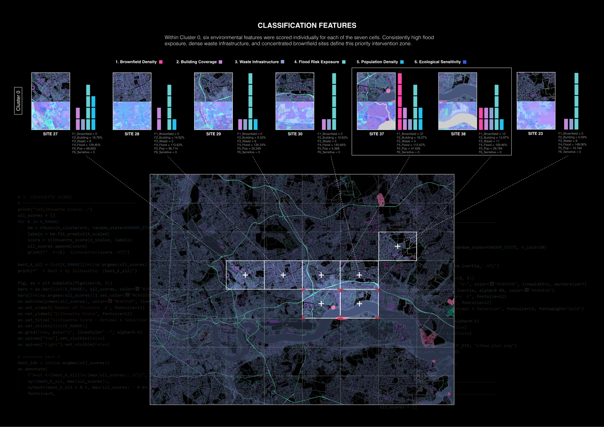
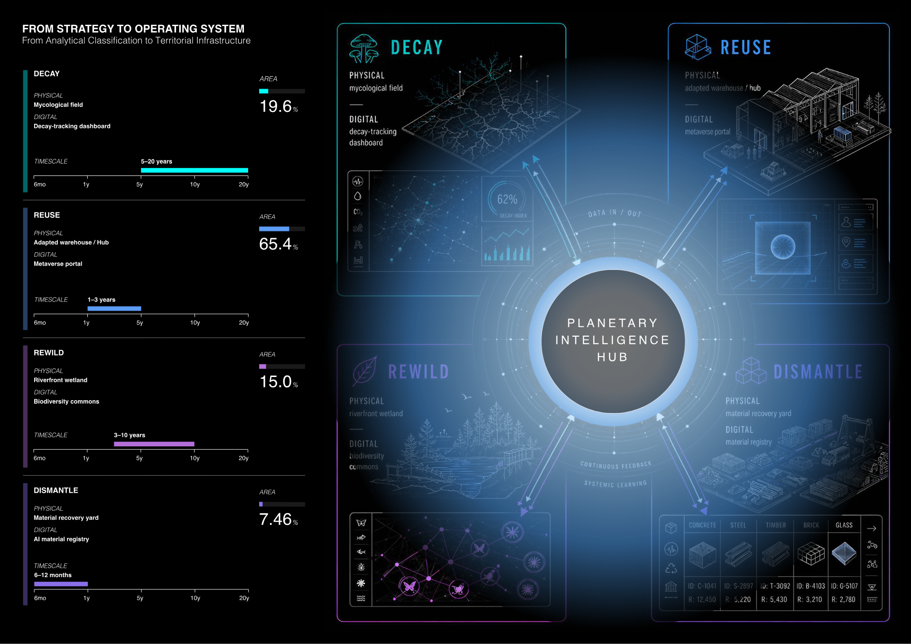
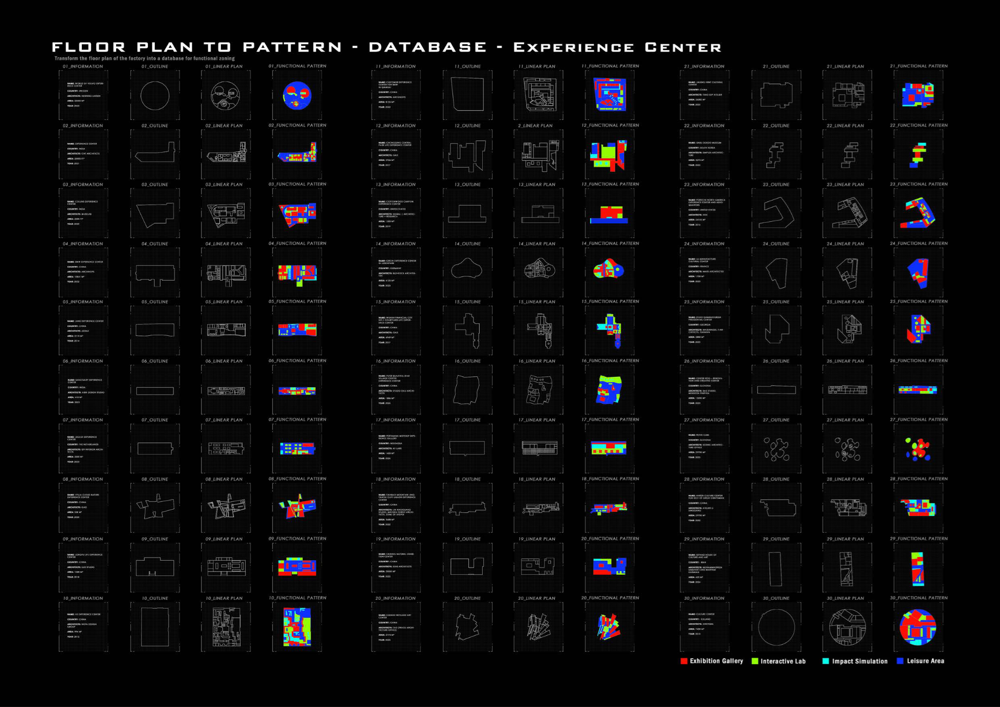

Read contamination读取污染状况
Fuse brownfield, waste, flood, population, building, and ecological indicators into a territorial risk picture.
将棕地、废弃物、洪水、人口、建筑和生态敏感性合成为一张风险底图。
Interactive thesis demo / post-industrial remediation毕设交互 Demo / 后工业修复
An interactive demo that turns the thesis into an explainable path — from territorial evidence to architectural deployment.
将毕设整理成一个可逐步操作的交互页：从场地证据到建筑落地，每一步的判断依据清晰可查。
Approach方法
Fuse brownfield, waste, flood, population, building, and ecological indicators into a territorial risk picture.
将棕地、废弃物、洪水、人口、建筑和生态敏感性合成为一张风险底图。
Explain why specific cells move to the front of the queue, and show the evidence behind each recommendation.
说明为什么某些网格被优先处理，并把推荐背后的证据展开给评审看。
Translate evidence into Decay, Reuse, Rewild, and Dismantle programs, each with physical and digital workstreams.
把数据判断转译为四种空间策略，每种策略都有实体场地和数字界面。
Use ML generation, field sensing, and the Hub architecture to keep remediation adaptive over time.
通过机器学习、现场感测和 Hub 建筑形成持续更新的修复反馈回路。
GIS Risk AtlasGIS 风险图集
The GIS atlas turns Dagenham Dock's pollution, hydrology, waste, population, building, and ecology layers into an evidence board for site prioritisation.
把 Dagenham Dock 的污染、水文、废弃物、人口、建筑与生态条件转成场地证据板，用于判断 SITE 修复优先级。

Dagenham Dock GIS base layer: an 8×8 analysis grid overlays brownfield, waste, hydrological risk, population density, building footprint, and ecological sensitivity — used to identify which site cells should enter the remediation queue first.
Dagenham Dock 的 GIS 证据底图：8×8 分析网格叠加棕地、废弃物、水文风险、人口密度、建筑覆盖与生态敏感性，用来判断哪些场地单元应优先进入修复队列。
Active evidence layers已激活证据图层
Atlas recommendation图集推荐
Flood exposure, waste infrastructure, and population density keep the site in a high urgency band.
Algorithmic Site Selection算法选址
Each SITE is treated as a comparable candidate, exposing the feature mix behind the priority queue.
把每个 SITE 当成可比较的候选单元，直接展示特征组合，而不是把聚类结果藏在黑箱里。

Selected cell当前网格
Evidence Layer证据层
Entropy Atlas as the evidence layer of Programming DecayEntropy Atlas 作为 Programming Decay 的证据层
Problem问题
Traditional remediation decisions often depend on expert intuition and scattered drawings, so the evidence behind site selection is difficult to compare or defend.
传统场地修复决策依赖专家直觉，缺少可量化、可追溯的证据基础；客观污染数据与社区主观感知长期割裂。
Data数据采集
Overpass API captures industrial-site points across East London, while Google Places comments add residents' perception and sentiment signals.
通过 Overpass API 抓取东伦敦工业遗址点位，同时调用 Google Places 评论与情绪评分，把地理证据和社区感知放到同一张图上。
Processing自动化处理
The n8n pipeline merges, deduplicates, and analyses the two data streams, turning collection, cleaning, and sentiment analysis into a repeatable workflow.
n8n 工作流编排两类数据的合并、去重与情感分析，让「数据采集 → 清洗 → 分析」不再依赖手工整理。
Output可视化与接入
The Leaflet map makes evidence inspectable, then feeds the Programming Decay loop from site prioritisation to strategy generation and hub feedback.
Leaflet 交互地图让证据可以被检查，并把结果接入「场地证据 → 算法选址 → 策略生成 → Hub 反馈」的完整闭环。
Community Sentiment Triangulation社区情绪三角验证
K-Means ranks cells with environmental features; Entropy Atlas cross-checks the priority queue through local comments and mapped places.
K-Means 用环境特征选址；熵图集用社区评论和地点情绪交叉验证 Site 38 的优先级。
Four Strategies四种策略
Each strategy couples a physical territory with a digital readout.
四种修复策略，每一种都对应一片实际场地和一个数字界面。

ML Design Engine机器学习设计引擎
The ML layer becomes a traceable loop: input labels, generated strategy field, cellular evolution, and decision readout.
机器学习层被整理为可追溯闭环：输入标签、策略生成、细胞自动机演化与决策读数。
Pix2Pix Evidence ChainPix2Pix 图纸证据链
Pages 38-41 make Pix2Pix traceable: typology samples, paired labels, inference, epoch comparison, Delaunay reading, and area ratio.
第 38-41 页把 Pix2Pix 展开为可追溯链路：类型样本、配对标签、训练推理、epoch 对比、Delaunay 读取和面积比例判断。




The six small maps show the Pix2Pix to NCA bridge: raw generated field, cleaned strategy zones, boundary repair, and final area readout.
六张小图展示 Pix2Pix 到 NCA 的衔接过程：原始生成场、清理后的策略分区、边界修复，以及最终面积读数。
Stage 03
Pix2Pix output is converted into NCA strategy zones, showing how generated patterns become stable remediation fields. / Pix2Pix 结果被转入 NCA 策略分区，说明生成图案如何变成稳定的修复场域。
Planetary Intelligence HubPlanetary Intelligence Hub
The Hub turns the operating system into a spatial interface: four towers, field nodes, public routes, labs, and live monitoring.
Hub 是整个系统的实体界面，把四塔、现场节点、公共路径、实验室和实时监测连接起来。

Current view当前视图
The site plan connects remediation plots, sensing nodes, circulation, and the four-tower Hub into one deployable interface. / 总平面把修复地块、感测节点、公共动线和四塔 Hub 连接成一个可部署界面。
Close收束